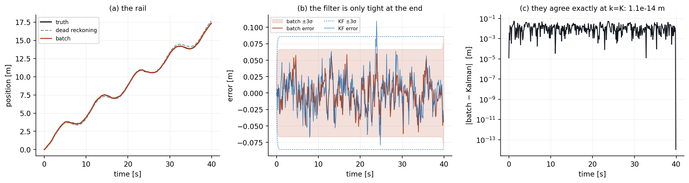
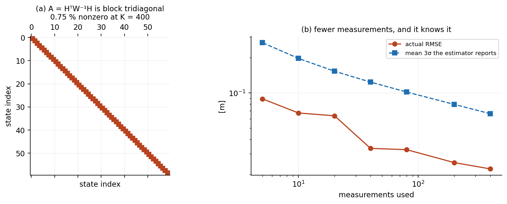
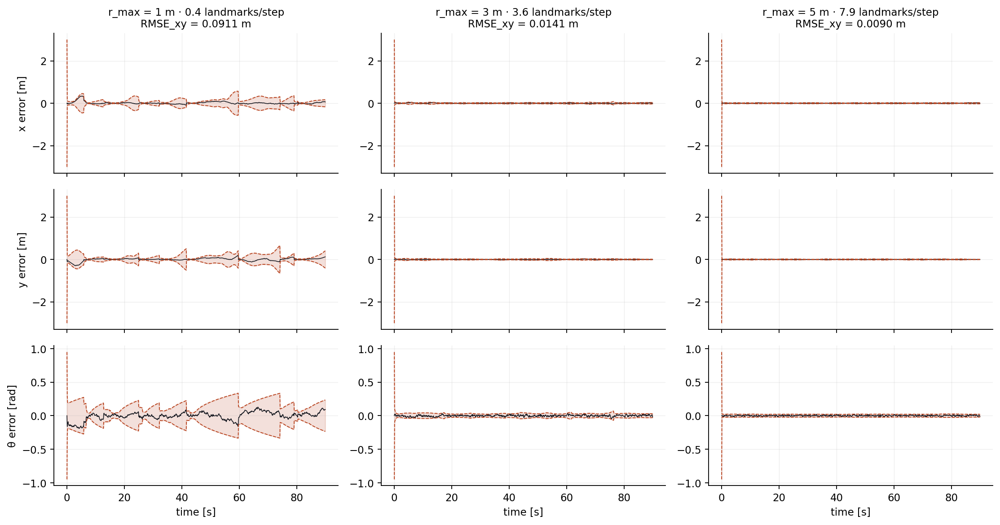
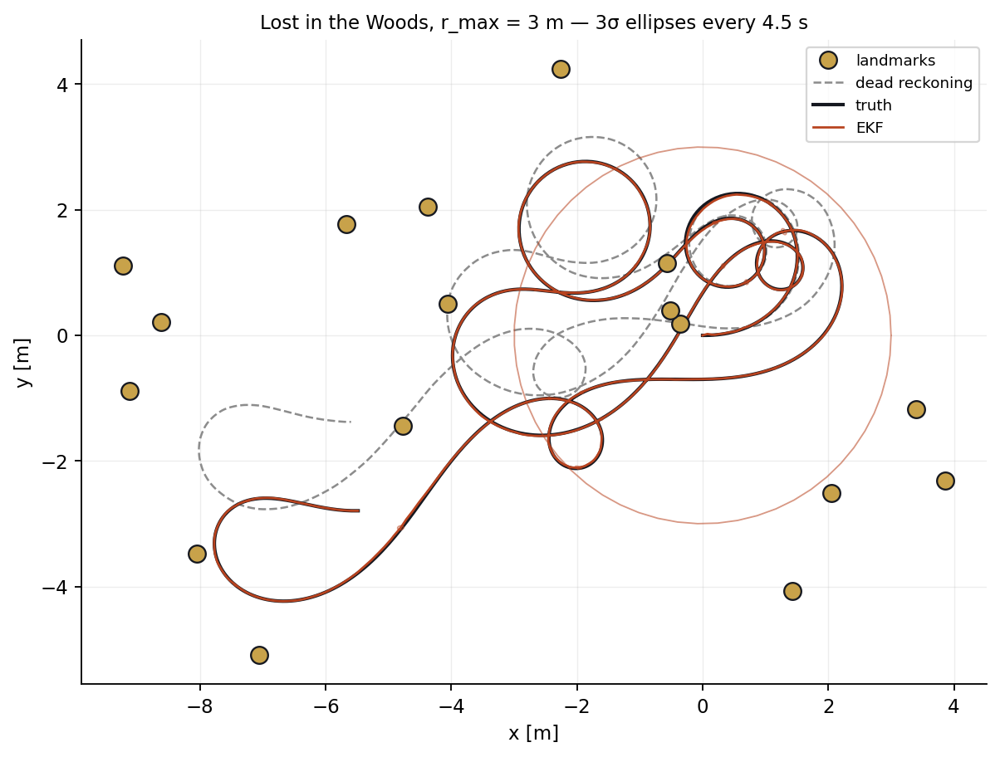
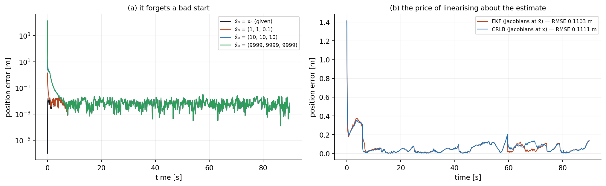
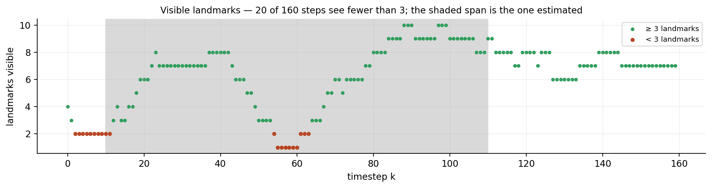
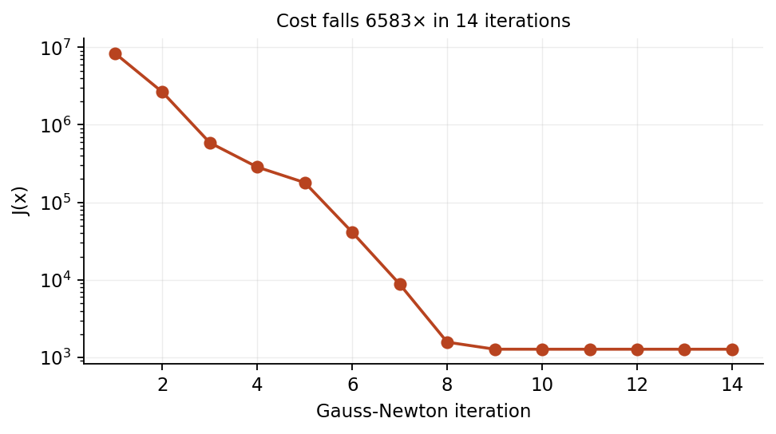
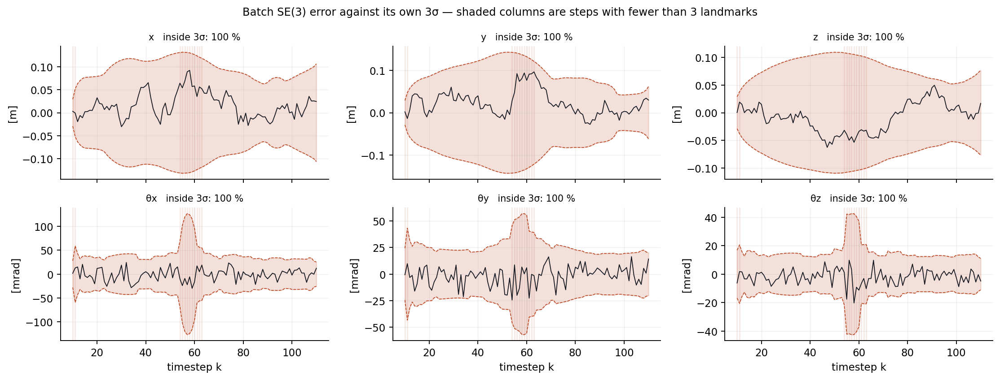
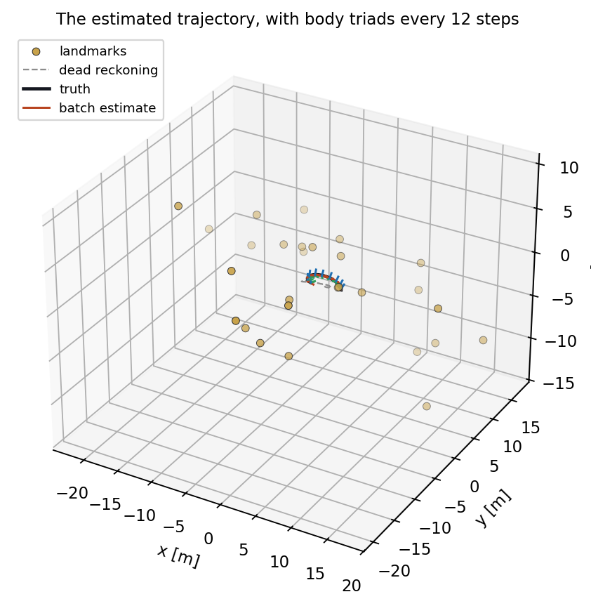
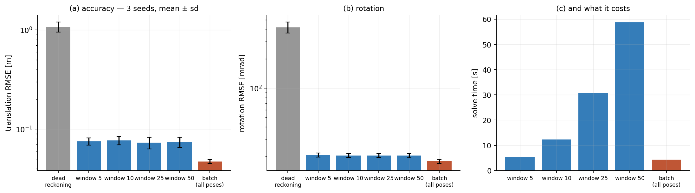

AER1513 ◆ State Estimation for Aerospace Vehicles ◆ Prof. Tim Barfoot ◆ University of Toronto
A robot on a rail. A robot lost in the woods. A vehicle under a starry night with a stereo camera. Three assignments, three state spaces — a line, a plane, and the Lie group of rigid transforms — and underneath them one estimator, because all three are the same maximum-a-posteriori problem written down carefully and differentiated. This page carries all three: the models, the derivations to the last Jacobian, the estimators re-implemented and measured, and the trajectories, errors and uncertainty bounds animated in 2-D and 3-D.
Chapter 0
Every one of these three problems is the same sentence: given everything I measured, what trajectory was I most likely on? Write that down and it becomes an optimisation.
Let \(\mathbf{x}\) be the whole trajectory — every pose, stacked — and let \(\mathbf{z}\) be everything measured: the inputs from proprioceptive sensors and the observations of the world. Bayes gives
and the maximum-a-posteriori estimate is the \(\mathbf{x}\) that maximises it. Taking a negative logarithm turns the product into a sum, and if every noise is zero-mean Gaussian the sum is quadratic in a set of error terms:
Here \(\mathbf{e}\) stacks one residual per constraint — one per motion step, one per landmark observation, one for the prior — and \(\mathbf{W}\) is block-diagonal, holding the covariance of each. That single expression is the whole course.
If \(\mathbf{e}\) is linear in \(\mathbf{x}\), so that \(\mathbf{e}(\mathbf{x}) = \mathbf{z} - \mathbf{H}\mathbf{x}\), then \(J\) is exactly quadratic and setting \(\partial J/\partial\mathbf{x} = \mathbf{0}\) gives the answer in one step:
That is Chapter 1, and nothing is approximate about it.
If \(\mathbf{e}\) is nonlinear, linearise about an operating point \(\mathbf{x}_{\mathrm{op}}\), writing \(\mathbf{e}(\mathbf{x}) \approx \mathbf{e}(\mathbf{x}_{\mathrm{op}}) - \mathbf{H}\,\delta\mathbf{x}\), and iterate:
This is Gauss–Newton, and the only thing that changes between Chapters 2 and 3 is what \(\boxplus\) means. In a vector space it is addition. On a Lie group it is not — and that single fact is what makes Assignment 3 a different problem rather than a bigger one.
A filter is the same objective solved under a constraint: only the newest pose may move, and everything older is summarised by a prior. That makes it cheap and recursive, and it is why a filter can never use a measurement to improve a pose it has already committed to. A sliding window of \(N\) poses interpolates between the two, and \(N\) is the knob in both sandboxes below.
| Assignment | State | Lives on | Motion | Measurement | Estimator |
|---|---|---|---|---|---|
| 1 · the rail | \(x_k\) | \(\mathbb{R}\) | linear | linear | batch = Kalman, exact |
| 2 · Lost in the Woods | \((x,y,\theta)\) | \(\mathbb{R}^3\) | nonlinear | range & bearing | EKF |
| 3 · Starry Night | \(\mathbf{T}_k\) | \(SE(3)\) | nonlinear, on a group | stereo, 4 px per landmark | batch Gauss–Newton |
The course datasets are not redistributed. Everything below is re-implemented from the models and run on data generated from those same models, with the noise covariances quoted in the reports — so every number here is reproducible from the repository alone.
Chapter 1 · Assignment 1
A robot runs along a rail. Wheel odometry says how fast it is going; a laser rangefinder measures the distance to a wall at the end. Both models are linear and both noises are Gaussian, so the posterior is exactly Gaussian, one linear solve is the answer, and there is no linearisation error anywhere. It is the only one of the three where that is true, which is precisely why it is worth doing first: everything that goes wrong in Chapters 2 and 3 goes wrong because this case is no longer available.
The rail, replayed. Grey is dead reckoning — integrating the odometry and nothing else, which drifts without bound. Red is the Kalman filter. The band underneath is its own ±3σ, and the dotted lines are what the batch solve claims over the same interval.
With sampling period \(T\), input speed \(v_k\), process noise \(w_k\) and measurement noise \(n_k\),
Both are affine in the state, which is the whole point.
Collect every unknown into one vector, \(\mathbf{x} = [\,x_0\;x_1\;\cdots\;x_K\,]^{\mathsf T}\), and write one residual per constraint. There are three kinds — a prior on where we started, one per motion step, and one per measurement actually taken:
Stacking them gives \(\mathbf{e}(\mathbf{x}) = \mathbf{z} - \mathbf{H}\mathbf{x}\) with
the upper block being the motion constraints and the lower the measurements. The estimate and its covariance follow immediately:
The same system solved recursively gives the familiar two steps — predict, then correct:
These are not two different algorithms. The filter is a forward elimination on the same block-tridiagonal system the batch solve inverts all at once — which has a sharp, checkable consequence.
The filtered estimate at time \(k\) conditions on measurements up to \(k\). The batch estimate at time \(k\) conditions on all of them, including the future — it is a smoother. At the final step there is no future left, so the two must coincide exactly.
Measured over a 400-step run: \(|\hat{x}^{\text{batch}}_K - \hat{x}^{\text{KF}}_K| = 1.1\times10^{-14}\) m, which is arithmetic noise, while the mean discrepancy over all other steps is 0.014 m — three orders of magnitude larger, and not an error but the value of hindsight.
RMSE over the whole run: batch 0.0223 m, Kalman 0.0268 m, dead reckoning 0.1688 m. Smoothing buys 17 % over filtering; both buy a factor of seven over integrating the odometry.


\(\mathbf{A}\) is block tridiagonal because \(e_{v,k}\) touches only \(x_{k-1}\) and \(x_k\), and \(e_{y,k}\) touches only \(x_k\). Nothing in the problem couples step 3 to step 300 directly. A dense solve of a \(K\times K\) system costs \(O(K^3)\); exploiting the band structure costs \(O(K)\), which is what makes batch estimation tractable at all for long trajectories — and it is exactly the structure the Kalman filter walks through one row at a time.
This is the point in the course where "batch is too expensive, so we filter" stops being true. Batch is not expensive. It is \(O(K)\) if you respect the sparsity, and it is a better estimate.
Keeping every \(n\)-th rangefinder reading and re-solving:
| Measurements | RMSE [m] | mean 3σ [m] |
|---|---|---|
| 400 (all) | 0.0223 | 0.0663 |
| 80 | 0.0326 | 0.1018 |
| 20 | 0.0636 | 0.1534 |
| 8 | 0.0570 | 0.2167 |
The reported bound grows faster than the actual error, so the estimator becomes conservative rather than wrong — the correct failure direction, and one worth contrasting with what happens on \(SE(3)\) in Chapter 3.
A note on this chapter. The Assignment 1 report is the one submission I no longer have a copy of, so this chapter is reconstructed from the problem statement rather than transcribed from my own write-up the way Chapters 2 and 3 are. The models, the derivations and every number above come from the re-implementation in scripts/tools/aer1513_core.py; nothing here is quoted from a document I cannot show you.
Chapter 2 · Assignment 2
A wheeled robot drives among a scatter of surveyed tree trunks with a laser rangefinder mounted a distance \(d\) ahead of its centre, measuring range and bearing to whichever trunks are within \(r_{\max}\). Three states, two measurements per landmark, and a variable number of landmarks per timestep. Nothing here lives on a manifold — the state is an ordinary vector — but both models are nonlinear, so the exactness of Chapter 1 is gone and every Jacobian has to be derived.
Assignment 2, Question 5, to the letter: black dots are the true landmark positions, blue is the true pose, red is the EKF estimate, the red curve around it is the 3σ ellipse from the top-left 2×2 block of \(\hat{\mathbf{P}}_k\), and the green rays are the range–bearing measurements actually being used at that instant. Grey is dead reckoning, drifting away from the first second onward.
The robot is a unicycle. With translational and rotational speed \(v_k,\omega_k\) and process noise \(\mathbf{w}_k = [w_{v,k}\;\; w_{\omega,k}]^{\mathsf T}\),
Note where the noise enters: through the input, not added to the state. That matters, because it means the effective process covariance depends on how fast the robot is going.
For landmark \(\ell\) at \((x_\ell, y_\ell)\), with the rangefinder offset \(d\) along the body \(x\)-axis,
The offset \(d\) is not cosmetic. If the sensor sat at the robot's centre, the range would be independent of heading and \(\partial r/\partial\theta\) would vanish; heading would then be observable only through the bearing. Moving the sensor forward couples \(\theta\) into the range as well.
From the dataset, and used unmodified:
The EKF needs the derivative of the motion model with respect to the state, evaluated at the previous estimate:
and with respect to the noise, which is where the input-dependence shows up:
writing \(c=\cos\theta_{k-1}\), \(s=\sin\theta_{k-1}\). The \(2\times2\) translational block is rank one: the odometry uncertainty is a cigar pointing along the direction of travel, not a circle. A robot that has driven in a straight line is far less sure how far it has gone than how far it has strayed sideways, and this term is why.
Abbreviate \(\Delta x = x_\ell - x_k - d\cos\theta_k\), \(\Delta y = y_\ell - y_k - d\sin\theta_k\), \(r = \sqrt{\Delta x^2 + \Delta y^2}\). Differentiating the range,
and the bearing,
so that
Both \(d\)-terms vanish as \(d\to0\), and the \(-1\) in \(\partial\phi/\partial\theta_k\) survives — the bearing is measured relative to the body, so turning the robot changes it one-for-one even if nothing moves.
At each step only the landmarks with \(0 < r^\ell_k < r_{\max}\) are used, and that count changes every step. Rather than looping the update once per landmark, stack them — it is the same posterior and it is one matrix inverse instead of \(M\):
with the innovation \(\mathbf{e}_k\) stacking \(\big[r^\ell_k - \check{r}^\ell,\;\; \mathrm{wrap}(\phi^\ell_k - \check{\phi}^\ell)\big]\). If no landmark is in range, \(\mathbf{G}_k\) is empty, the update is skipped, and the covariance simply grows.
The angle wrap is not a detail. An innovation of \(+2\pi - \varepsilon\) and one of \(-\varepsilon\) are the same measurement; feed the first to a linear update and it will violently correct a pose that was already right.


The uncertainty bound, in two dimensions. Starved deliberately at \(r_{\max} = 1\) m. Left: the 3σ ellipse at true scale (solid) and magnified ×8 (dashed) so its shape is legible — it is an ellipse, not a circle, and it is elongated along the direction of travel exactly as \(\mathbf{Q}'_k\) predicts. Right: the three error channels filling in against ±3σ. Watch the heading envelope fan open during the long gaps and collapse the instant a landmark is seen.

From \((1,1,0.1)\) the filter is inside 0.1 m after 2 steps. From \((10,10,10)\) — ten metres and ten radians out — it takes 24 steps, 2.4 s. From \((9999,9999,9999)\), absurd by construction, it also takes 24 steps: the recovery time is set by how long until enough landmarks have been seen, not by how wrong the start was.
That is a property of the measurements, not of the filter. Range and bearing to two known landmarks determine the pose outright, so the first well-conditioned update effectively re-initialises the estimator regardless of what it believed a moment earlier.
The report argues that evaluating the Jacobians at the true state "often provides more accurate state estimates", being the best a linearised filter could do. Measured on a 900-step run, it does not:
| \(r_{\max}\) | EKF (Jacobians at \(\hat{\mathbf{x}}\)) | CRLB (Jacobians at \(\mathbf{x}\)) |
|---|---|---|
| 1 m | 0.1103 m | 0.1111 m |
| 3 m | 0.0576 m | 0.0618 m |
The two are within noise of each other, and at \(r_{\max}=3\) the "ideal" linearisation is very slightly worse. Both are legitimate: the CRLB filter is not an optimal estimator, only a differently-linearised one, and it is only a bound in the sense of the covariance it computes, not the error it achieves. The real lesson is that on this problem the estimate stays close enough to the truth that \(\mathbf{F}\) and \(\mathbf{G}\) barely notice which point they were evaluated at — linearisation error is simply not the binding constraint here. It is in Chapter 3.
Chapter 3 · Assignment 3
A vehicle carrying an IMU and a rectified stereo pair moves through a field of surveyed landmarks. The state is now a sequence of rigid transforms — six degrees of freedom each — and they do not live in a vector space. You cannot add a correction to a rotation matrix and expect a rotation matrix back. Everything in this chapter follows from taking that seriously.
The estimated trajectory as it is built. Gold spheres are landmarks; green rays are the stereo observations actually available at that instant; the red, green and blue sticks are the vehicle's own \(x\), \(y\), \(z\) axes, so you can see the orientation as well as the position. Grey dashed is dead reckoning on the IMU alone.
A pose is \(\mathbf{T}\in SE(3)\), a \(4\times4\) matrix built from a rotation and a translation. The tangent space at the identity is \(\mathfrak{se}(3)\cong\mathbb{R}^6\); an element \(\boldsymbol{\xi} = [\boldsymbol{\rho}^{\mathsf T}\;\;\boldsymbol{\phi}^{\mathsf T}]^{\mathsf T}\) maps into the group by
with \(\mathbf{C} = \exp(\boldsymbol{\phi}^\wedge)\) given by Rodrigues' formula and \(\mathbf{J}\) the left Jacobian of \(SO(3)\),
Two operators do all the work. The adjoint moves a perturbation through a transform,
and the circle-dot turns "perturbation acting on a point" into "matrix times perturbation",
Both identities are verified numerically in the harness to \(1.1\times10^{-16}\), and \(\ln(\exp(\boldsymbol{\xi}^\wedge))^\vee = \boldsymbol{\xi}\) to \(5\times10^{-14}\) inside the principal branch \(\|\boldsymbol{\phi}\|<\pi\).
The IMU measures the body-frame twist \(\boldsymbol{\varpi}_k = [\boldsymbol{\nu}^{\mathsf T}\;\;\boldsymbol{\omega}^{\mathsf T}]^{\mathsf T}\), and the motion model is a group product, not a sum:
The stereo camera observes landmark \(j\) as four pixel coordinates,
the four rows being \(u_\ell, v_\ell, u_r, v_r\). The baseline \(b\) enters only the third row — the left and right images differ by exactly the disparity, which is what makes depth observable from a single frame.
On a group you cannot subtract poses. The motion residual is the logarithm of the discrepancy transform:
and the measurement residual is an ordinary difference, because pixels are a vector space:
Writing \(\mathbf{T}_k = \exp(\delta\boldsymbol{\xi}^\wedge_k)\check{\mathbf{T}}_k\) shows the first term is \(-\delta\boldsymbol{\xi}_{k_1}\), so \(\mathbf{e}_{v,k_1}\sim\mathcal{N}(\mathbf{0},\check{\mathbf{P}}_{k_1})\) and every residual is zero-mean Gaussian in the tangent space. The objective is then the usual one:
Perturb the operating point on the left, \(\mathbf{T}_k = \exp(\boldsymbol{\epsilon}^{\wedge}_k)\mathbf{T}_{\mathrm{op},k}\). For the motion term, using the adjoint identity and \(\exp(\mathbf{a})\exp(\mathbf{b})\approx\exp(\mathbf{a}+\mathbf{b})\) to first order,
The state-transition Jacobian is an adjoint. For the measurement term, expanding \(\exp(\boldsymbol{\epsilon}^\wedge)\approx\mathbf{I}+\boldsymbol{\epsilon}^\wedge\) and applying the circle-dot,
with the stereo projection derivative
Note the \(1/z^2\): a landmark twice as far away contributes a quarter of the gradient. Distant stars are almost free of information about translation, which is why the uncertainty is so sensitive to how many landmarks are near.
Stacking, \(\mathbf{e}(\mathbf{x})\approx\mathbf{e}(\mathbf{x}_{\mathrm{op}}) - \mathbf{H}\delta\mathbf{x}\) with
and the update is the Gauss–Newton step of Chapter 0, applied on the group:
The boxed line is \(\boxplus\). It is a multiplication, not an addition, and it is the only reason the iterate stays on the manifold.
The motion residual linearises to \(\mathbf{e}_{v,k}(\mathbf{x}_{\mathrm{op}}) + \mathbf{F}\boldsymbol{\epsilon}_{k-1} - \boldsymbol{\epsilon}_k\), but the normal equations are written for \(\mathbf{e}\approx\mathbf{e}(\mathbf{x}_{\mathrm{op}}) - \mathbf{H}\delta\mathbf{x}\). So \(\mathbf{H}\) carries the opposite sign: \(-\mathbf{F}\) below the diagonal and \(+\mathbf{1}\) on it, while the measurement blocks are \(+\mathbf{G}\).
Getting that backwards is invisible in \(\mathbf{A} = \mathbf{H}^{\mathsf T}\mathbf{W}^{-1}\mathbf{H}\), which is unchanged under \(\mathbf{H}\to-\mathbf{H}\), and fatal in \(\mathbf{b}\), which flips. I made exactly this mistake while writing the harness: the motion block pulled against the measurement block, the cost climbed from \(8.4\times10^6\) to \(1.1\times10^8\) over ten iterations, and the "estimate" ended up 44 m from the truth against 1.15 m for doing nothing at all. Corrected, the same solver converges monotonically to 0.055 m.
It is worth stating because it is the kind of error a plausibility check does not catch — the matrices are the right shape, the solve succeeds, and the answer is confidently wrong.



The uncertainty bound, in three dimensions. The 3σ position ellipsoid — the \(3\times3\) translational block of the marginal covariance \(\hat{\mathbf{P}}_k\), magnified ×15 so it is visible at trajectory scale — swept along the estimated path, with the three translation error channels filling in against their bounds. It is an ellipsoid rather than a sphere because the stereo geometry constrains depth far more weakly than it constrains bearing.

This is the Assignment 3 estimator running in your browser: \(SE(3)\) poses, a stereo camera, an IMU twist, and Gauss–Newton with a left perturbation — the same maths derived above, re-implemented in JavaScript. Drag the window from 1, which is an extended Kalman filter, to the whole trajectory, which is batch. Drag the scene to orbit and scroll to zoom; the grid is the ground plane, the dashed lines drop each landmark and each pose onto it, and the loop drawn on the grid is the trajectory's own shadow.
Batch is doing something a filter cannot: a landmark seen at step 90 corrects the pose at step 40, because both are unknowns in the same solve. Turn the blackout on and watch the batch estimate stay flat through it while the filter opens up.
The same window knob on the Chapter 2 problem — three states, range and bearing, no Lie group. It re-solves fast enough to respond on every slider move, which makes it the better place to build intuition before turning to \(SE(3)\).
The original Lost in the Woods animation from the assignment submission: the robot wanders among the landmarks while the estimator tracks it.
Take the landmarks down to four and the estimate starts to look like the dead-reckoned path.
Chapter 4
The recurring question across all three assignments is how much of the trajectory an estimator has to consider at once. Assignment 3's report concludes that batch is "a lot more accurate" than a sliding window. Re-running it carefully — three seeds, error bars, and windows given both a fair initialisation and enough iterations to converge — the conclusion survives, but not for the reason it is usually given, and the size of the window turns out not to matter at all.

| Estimator | Translation RMSE [m] | Rotation RMSE [mrad] | Solve time [s] |
|---|---|---|---|
| Dead reckoning | 1.0768 ± 0.1255 | 421.3 ± 54.4 | — |
| Window, 5 poses | 0.0752 ± 0.0063 | 20.7 ± 1.0 | 5.4 |
| Window, 10 poses | 0.0772 ± 0.0075 | 20.4 ± 1.0 | 12.3 |
| Window, 25 poses | 0.0732 ± 0.0099 | 20.4 ± 1.0 | 30.7 |
| Window, 50 poses | 0.0740 ± 0.0090 | 20.4 ± 1.0 | 58.7 |
| Batch (all 81 poses) | 0.0473 ± 0.0022 | 17.8 ± 0.9 | 4.3 |
Batch is 0.0473 ± 0.0022 m; every window, from 5 poses to 50, lands between 0.073 and 0.077 m with standard deviations of 0.006–0.010. A ten-fold increase in window length moves the mean by less than one standard deviation. The gap that matters is not how long the window is — it is whether the estimator is allowed to revisit the beginning of the trajectory at all.
That is a sharper statement than "bigger windows are better", and it is the one the data supports.
Batch solves the 81-pose problem once, in 4.3 s. A 50-pose window solves a 50-pose problem at every one of the 81 steps, and takes 58.7 s — fourteen times longer, to be 1.6× less accurate. Even the 5-pose window, the smallest tested, is slower than full batch.
The usual framing — batch is accurate but expensive, so we filter — is backwards for offline estimation. A filter is cheap because it must run online, not because solving everything at once is hard. If the data is already on disk, there is no argument for the window.
An earlier version of this analysis reported that batch beat every window by 2.2×. That number was wrong, twice over, and both bugs flattered the same conclusion in opposite directions:
Every window was anchored to ground truth. The prior on the first pose of each window used the true pose rather than the previous window's estimate — so a sliding window was handed the right answer once per timestep. Fixing it means each window inherits the outgoing pose and its marginal covariance, which is what a real sliding-window estimator does.
Windows were not converged. Re-initialising each window by dead reckoning and allowing a fixed five iterations makes large windows look worse than small ones, purely because they need more iterations from a worse starting point. Warm-starting from the previous window removes the artefact.
With both fixed, the honest gap is 1.6× rather than 2.2×, the ordering by window size disappears into the noise, and the cost comparison reverses. I am recording it because the first version was plausible, self-consistent, and wrong — and because an estimator that is quietly given the answer is exactly the failure that a good result hides.
The Assignment 3 report observes that the sliding-window 3σ bounds fail to cover the error while the batch bounds do, and suspects the covariance estimate rather than the estimator. That is testable: hold the true noise fixed, generate one dataset, and scale only the covariance the estimator believes.
| Assumed \(\mathbf{Q},\mathbf{R}\) | RMSE\(_{xy}\) [m] | inside 3σ\(_x\) | inside 3σ\(_y\) | inside 3σ\(_\theta\) |
|---|---|---|---|---|
| ×0.25 | 0.0141 | 83.3 % | 88.2 % | 85.0 % |
| ×0.5 | 0.0141 | 94.1 % | 97.1 % | 95.3 % |
| ×1 (true) | 0.0141 | 99.0 % | 99.9 % | 99.8 % |
| ×2 | 0.0141 | 100 % | 100 % | 100 % |
| ×4 | 0.0141 | 100 % | 100 % | 100 % |
The estimate does not move — 0.0141 m at every scale, to four decimal places — while coverage swings from 83 % to 100 %. The report's suspicion was right.
And it is not a numerical coincidence, it is algebra. Scaling every covariance by the same \(s\) sends \(\check{\mathbf{P}}\to s\check{\mathbf{P}}\) and \(\mathbf{R}\to s\mathbf{R}\), so the gain \(\mathbf{K} = \check{\mathbf{P}}\mathbf{G}^{\mathsf T}(\mathbf{G}\check{\mathbf{P}}\mathbf{G}^{\mathsf T}+\mathbf{R})^{-1}\) is invariant: the \(s\) cancels top and bottom. A uniform mis-scaling of the noise model is completely invisible in the estimate and completely visible in the bound. Consistency checks like this one test the noise model; they do not test the estimator.
Across all three chapters the covariance grows when the measurements stop constraining the state, and by nothing else. On the rail it grows between rangefinder readings. In the woods it fans out during the gaps at \(r_{\max}=1\) m — 0.43 landmarks per step — and snaps shut on the next sighting. On \(SE(3)\) the envelope widens through every one of the steps with fewer than three landmarks in frame and closes afterwards.
The \(1/z^2\) in the stereo Jacobian is the mechanism in the third case: information about translation falls off as the square of the range, so a camera looking at distant landmarks is, for the purposes of estimating where it is, looking at almost nothing.
The three estimators live in one module, and every figure, number and video on this page is regenerated by two scripts. The course datasets are not redistributed; the harness generates its own data from the models in Chapters 1–3, using the noise covariances quoted in the reports.
Needs numpy, matplotlib and ffmpeg. The browser sandboxes are assets/js/se3_engine.js and assets/js/localization_engine.js — the same Gauss–Newton, including the marginal covariance of the newest pose used for the 3σ readout.
AER1513 — State Estimation for Aerospace Vehicles, Prof. Tim Barfoot, University of Toronto. The three assignments, the datasets and the problem statements are the course's; the submissions are mine. Assignment 2 (Lost in the Woods) was submitted in MATLAB, Assignment 3 (Starry Night) in Python.
The derivations above follow my own submitted reports for Chapters 2 and 3, which are linked below. Chapter 1 is reconstructed from the problem statement, because that report is the one I no longer have. Everything measured on this page comes from a fresh re-implementation written for it, and where the re-implementation disagrees with the reports — the Cramér–Rao comparison in Chapter 2, the window sweep in Chapter 4 — the disagreement is stated rather than smoothed over.